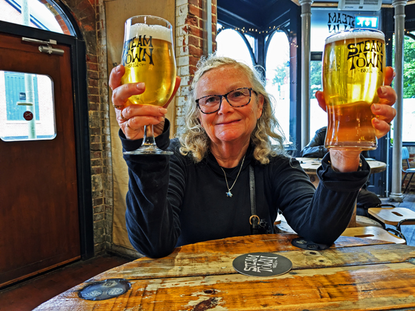
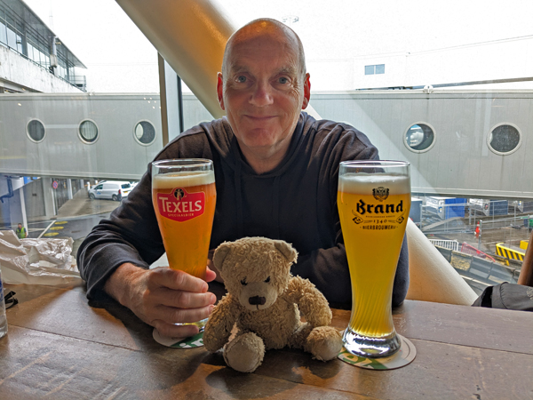
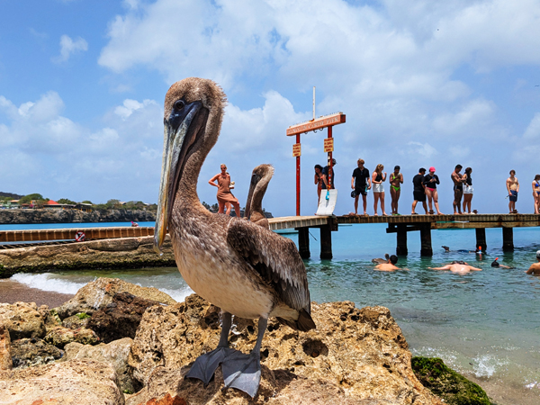

Monday 1st June We got a taxi from Kingsclere just before 3pm and were at the station in Basingstoke by about 3:15. The 15:11 train to Southampton was late so we were able to catch it. We got to the airport at about 4.
We had booked a night at the airport Premier Inn. We had not really planned to stay at the airport but the hotel was very cheap so we thought we may as well. It was only a five minute walk from the station so we were checked in by about 4:15.
We had the option of going into Southampton for a few drinks but instead decided to go to Eastleigh which was only three minutes away by train. We got a train at about 5:30 and walked first to Steam Town Brew Co. a few minutes away. This was an excellent place with a good range of their own beers. We had three drinks in there. We probably would have had another but there was a break in the rain when we had finished our drinks so we walked back to the Wetherspoons opposite the station.

The only tables we could find in this pub were reserved for people joining in the quiz. We decided we may as well take part and it all proved to be quite enjoyable. We ended up coming third behind two teams of five or six people. We ate while doing the quiz and left at about 10:30. We got the train back and had a couple more glasses of wine in the room before bed.
Tuesday 2nd June We were awake by about 6:30, had showers and checked out. We were in the airport a few minutes later. There were no queues at check in or security so we were sat in the departure area by about 7:15. Our flight to Amsterdam left on time at 9:05.
We had two hours in Schiphol before our 13:25 flight to Curaçao. We were off the plane fairly quickly and were taken by bus to the terminal. We headed straight to Taste from the Lowlands which is now called "The Butcher" for some reason. It was exactly the same as it has always been so we were able to have our usual beers as well as a portion of bittenballen and cheesy chips.

We had a ten minute walk from the bar to the departure gate. We boarded by 1pm and took off on time. The flight was totally full but was all OK. We had a few bottles of wine each and the nine and a half hour journey went reasonably quickly. We landed about ten minutes early at 5pm local time. We got through immigration more quickly than expected but had a bit of a wit for our luggage. We were through the airport by 6.
We were met in the arrivals area by "Papa", who drove us to All West Apartments about 40 minutes away. He showed us where the dive centre was and stopped at a mini-mart for us to buy a few things for tonight. When we arrived at the apartment, our rental truck was waiting outside.
The apartment is superb. Not only does it have everything we need, but it has a large balcony with excellent sea views. The area we are in is a bit isolated but we are happy to spend most of the next week self-catering if we need to. We will move into Willemstad, which should be more lively for five nights next week. We were both worn out by the time we arrived
We were both worn out by the time we arrived. We had drank more than planned last night and the five hour time difference did not help. We did a bit of unpacking and then had sandwiches on the balcony before an early night.
Wednesday 3rd June We were both awake before 6 this morning. As soon as I got up, I spotted our first turtle of the trip swimming in the shallows beneath the balcony.
We went straight out for a walk round. We found the dive room and went through it to get to the front of the apartments from where there is a set of steps down to the beach. We walked along the beach to Playa Piskadó. Here there is a small pier where fisherman clean their fish and feed turtles with the waste. There were several turtles swimming around the pier as well as a couple of photogenic pelicans. After watching these for a while, we returned to the balcony for breakfast.
We had decided that we would have a day off today and start our diving tomorrow. We had a few things to sort out and thought it would be good to find our way round while recovering from the journey out here.
We went out in our truck at about 9:30. We went first to the dive centre to check-in but most of the paperwork had already been done so we did not really need to do anything else. We told them we would come and collect our weight belts when we start diving tomorrow.

From there, we drove back the way we had come yesterday to a bigger supermarket. As we will be mostly self-catering for the next week, we needed quite a few things and the local mini-mart was not really up to what we wanted. We were able to stock up on most of what we needed and returned to the apartment. After unloading everything, I went for another walk along the beach and then managed to find Roxy. There is no reception here but Roxy is the cleaner who also seems to be our only point of contact for just about everything else. We sorted out the paperwork for the truck with her and tried, unsuccessfully to pay the remainder of our bill.
The rest of the day was spent lazing around in the apartment or on the balcony while also charging batteries and generally getting everything ready for tomorrow. We did both go into the sea at about 4ish. Roz went for a swim while I took a few photos of the turtles that were still by the pier.
We cooked mini burger type things for tea but did not do a lot else for the rest of the evening.
Thursday 4th June We were awake early again and had breakfast on the balcony. We had to go back to the dive centre to collect our weight belts and waited until 8:30, the time the boat leaves for the morning. We got our weights and paid our bill, then dived in front of the dive centre at Playa Kalki (or Alice in Wonderland).
This was a nice site to start our diving here. It was an easy entry from the end of a pier and an easy site to navigate as there is a rope going down the pier from the reef. The site was very similar to some of the Bonaire sites we have dived before with mostly the same marine life. We drove back to the apartment after the dive and an hour or so later went out to dive our house reef.
We had not really known where we should stay when we were planning the trip to Curaçao but had chosen All West Apartments ass the house reef (Playa Piskadó) is probably the best place on the island to see turtles. Although there is no on-site dive centre here, it is linked to Go West Diving and there is a supply of tanks in the gear room. After walking down a flight of about 25 stairs, it was another easy entry, this time from the beach.
This was a nicer site than the first one. We seemed to see a lot more. We saw three giant green morrays, two lots of squid.... and three green turtles. I think we will be diving this site a lot in the next six days!